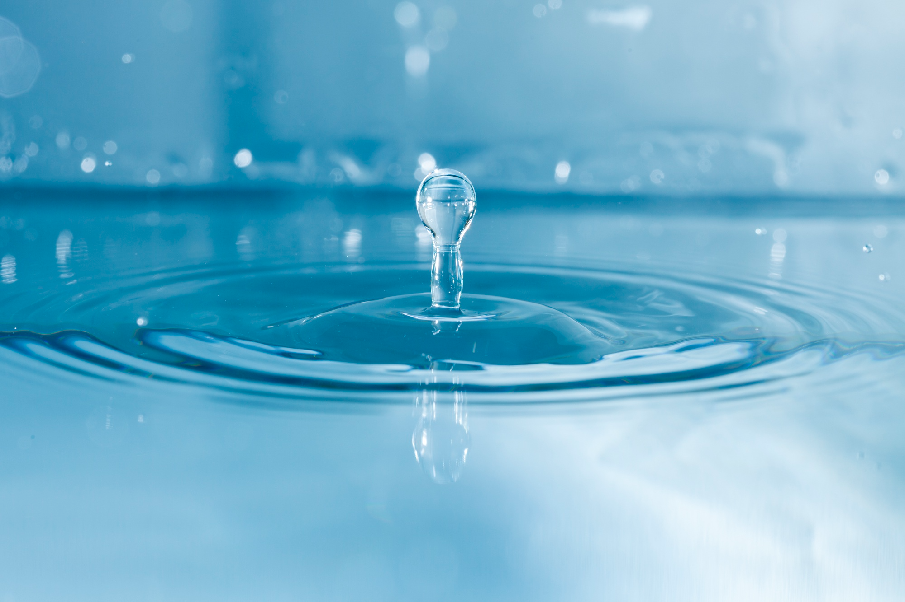
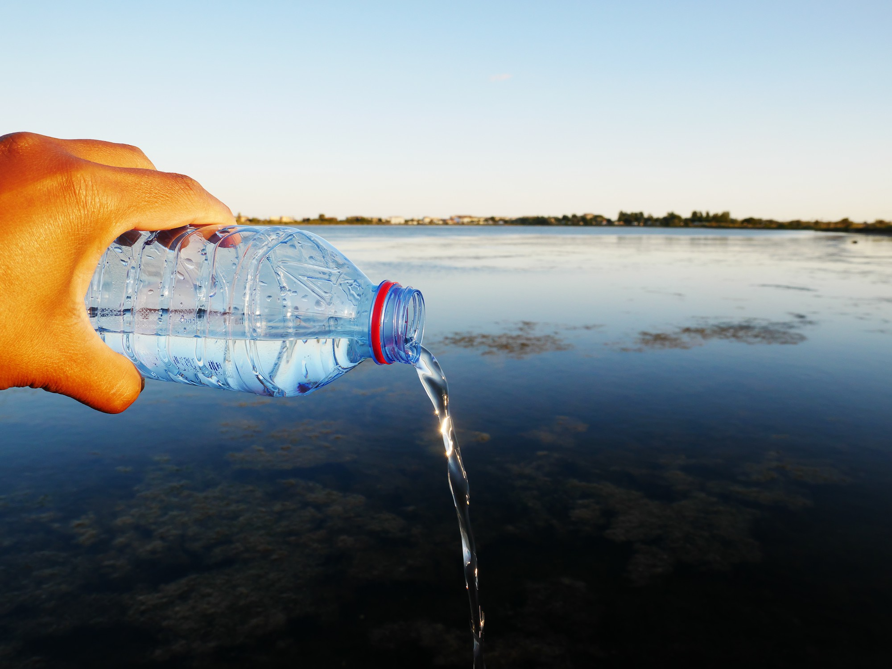
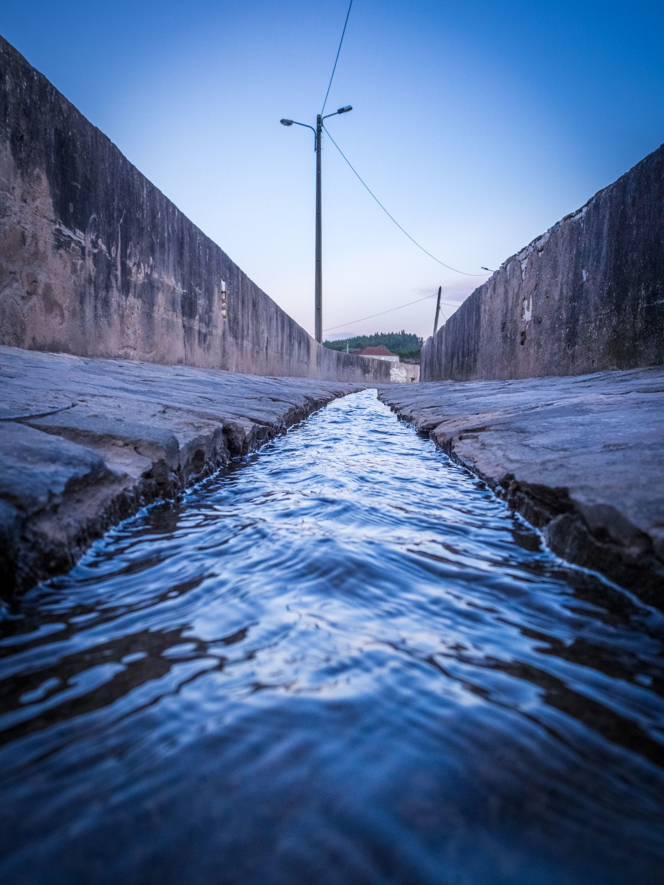

Our purpose
Turning water conservation into a skill, not just an idea.
Water scarcity is not only a resource problem—it is a decision-making problem. Many of the choices that affect water use happen daily, often without clear feedback on their long-term consequences.


The platform provides an interactive environment where users can explore how water systems respond to different actions under real-world constraints.
To support learning, an AI-driven guidance system analyzes user decisions and offers clear, context-aware feedback.
Instead of giving fixed answers, it helps users understand why certain strategies are more effective and how alternative choices can lead to better outcomes.